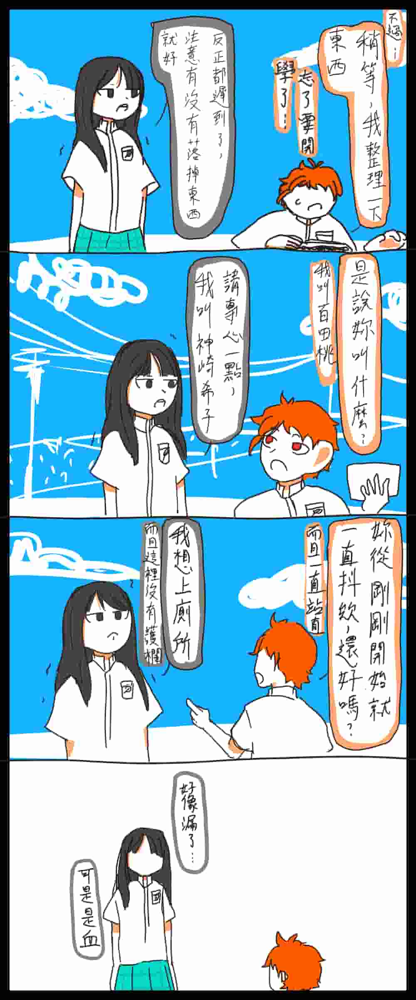
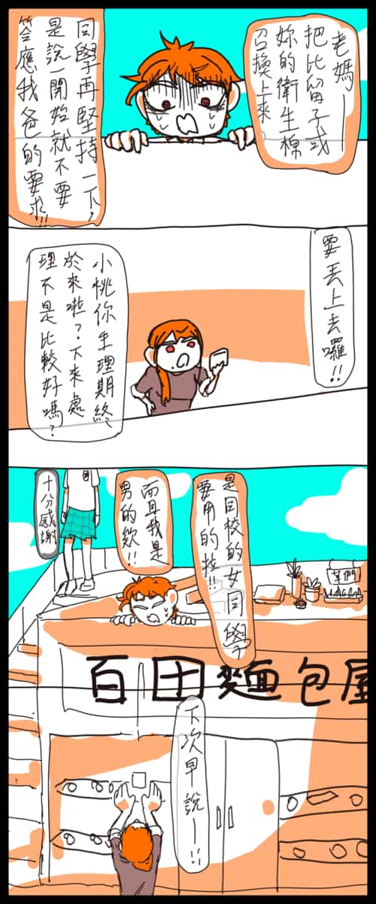
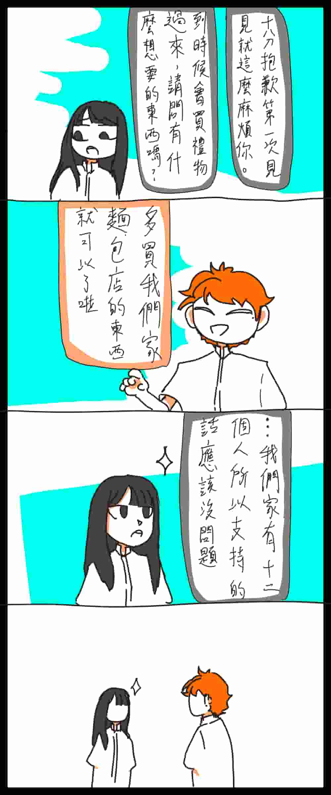
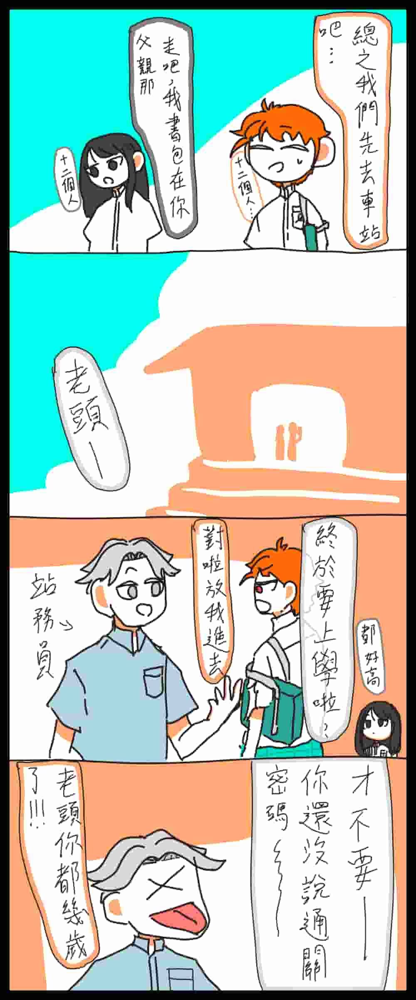
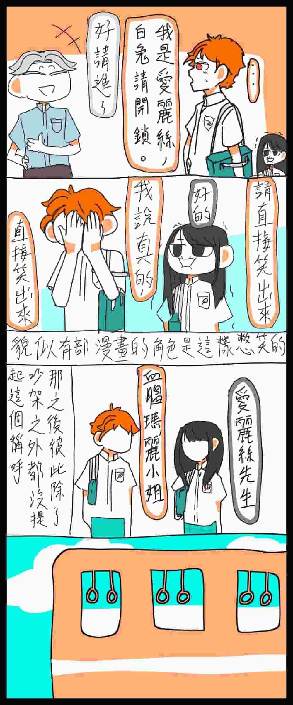
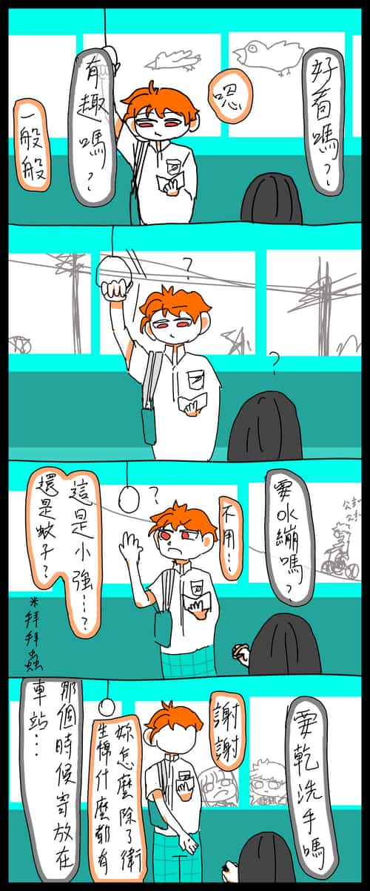
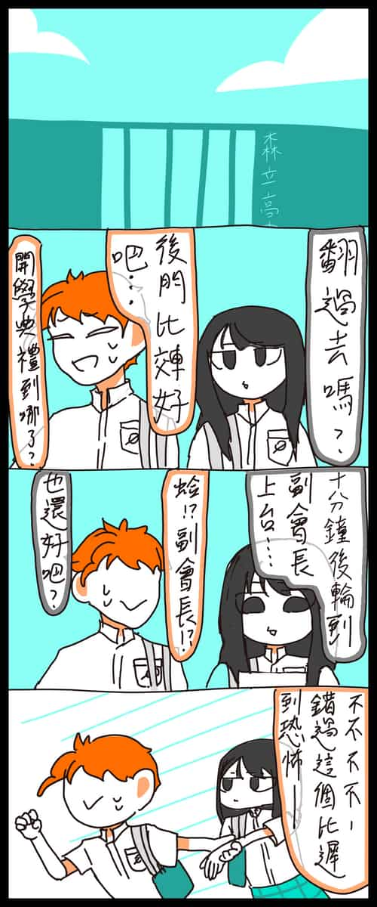
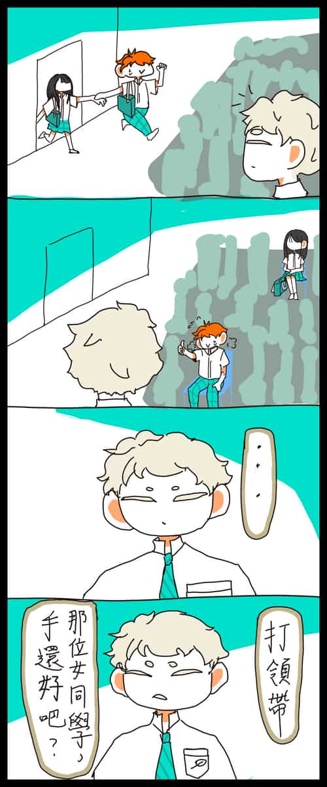
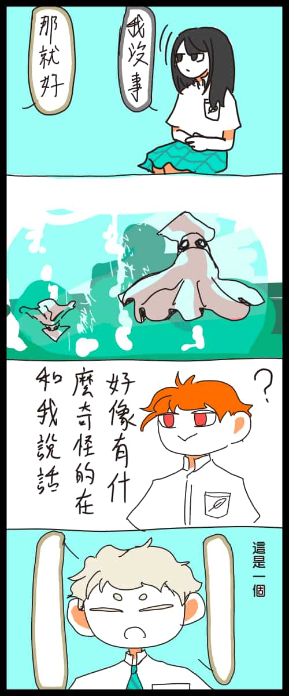
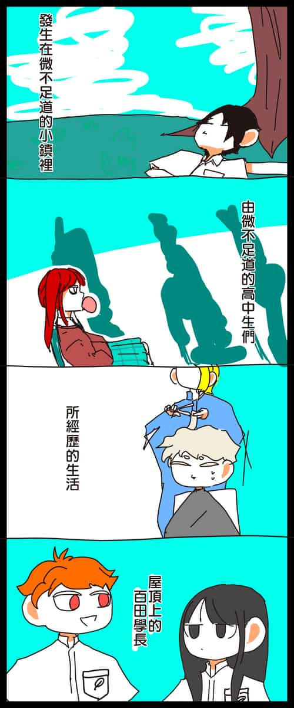

第一集
下一集


在最一開始的版本，其實是真的寫成漏尿的。
但畢竟在第一次見面的人面前漏尿還是有點過份了所以沒有採用





從某格開始桃的包包就一直畫錯邊了，
請當作他是為了方便看書才換方向就好




一上來就畫的那麼像是完結篇，不過這只是故事的開頭而已
在這篇還是小說的時期，僅僅只是到兩人見面就打了將近5000字，
當然包含了希子怎麼被桃的爸爸拜託的部分
雖然有以上種種能說，
但最讓我覺得慚愧的部分果然還是寫到了10000字之後連學校都還沒進去的事情，
所以為了彌補，在其他人的名字出現前就讓他們出場露面一下，
本來超過一萬字的小說開頭，現在只用了11頁一共44格就說完了比原本還要多的故事······
果然換個跑道是正確的吧
下一集